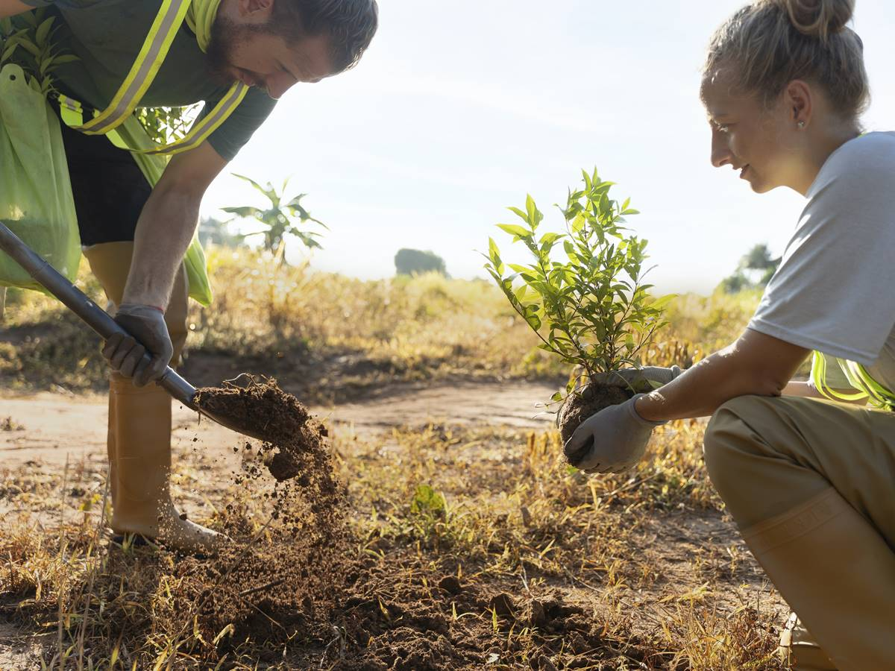

Sobre nós
Somos uma ong que tem como objetivo cuidar do meio ambiente e da saúde das pessoas. Acreditamos que a preservação do meio ambiente é essencial para garantir um futuro sustentável para as próximas gerações.
Nossos projetos

Temos diversos projetos voltados para a preservação do meio ambiente e para a promoção da saúde das pessoas. Alguns de nossos projetos incluem:
Ver todos os projetos